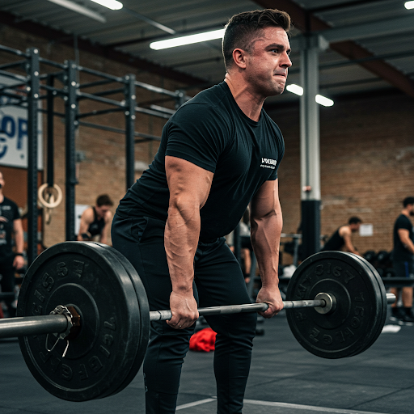

El Impacto Real del Ejercicio Regular en tu Salud
Publicado el 20 de abril de 2025 por el Equipo de FitConnect
El ejercicio regular es mucho más que una forma de mantenernos en forma; es un pilar fundamental para una salud óptima. Datos de la Organización Mundial de la Salud (OMS) indican que la inactividad física es el cuarto factor de riesgo principal de mortalidad mundial, contribuyendo al 6% de las muertes a nivel global.
Estudios han demostrado consistentemente que la actividad física regular puede reducir significativamente el riesgo de enfermedades cardiovasculares, la principal causa de muerte en el mundo. Un metaanálisis publicado en el Journal of the American College of Cardiology encontró que incluso 150 minutos de actividad física de intensidad moderada a la semana pueden reducir el riesgo de enfermedad coronaria en un 14%.
Además de la salud cardiovascular, el ejercicio juega un papel crucial en la prevención y el manejo de la diabetes tipo 2. La actividad física mejora la sensibilidad a la insulina y ayuda a regular los niveles de glucosa en sangre. Investigaciones del National Institutes of Health (NIH) sugieren que el ejercicio regular puede ser tan efectivo como algunos medicamentos para controlar la glucemia en personas con diabetes tipo 2.
El bienestar mental es otro ámbito donde el ejercicio tiene un impacto significativo. La actividad física libera endorfinas, neurotransmisores que tienen efectos analgésicos y generan una sensación de bienestar. Un estudio publicado en el British Journal of Sports Medicine reveló que el ejercicio regular puede reducir los síntomas de depresión y ansiedad de manera similar a la terapia o la medicación en algunos casos.
Finalmente, el ejercicio contribuye a la salud ósea y muscular, ayudando a prevenir la osteoporosis y la sarcopenia (pérdida de masa muscular relacionada con la edad). Actividades de carga, como caminar, correr o levantar pesas, estimulan la formación de hueso y fortalecen los músculos, mejorando la movilidad y reduciendo el riesgo de caídas en la edad adulta.
Incorporar al menos 30 minutos de actividad física de intensidad moderada la mayoría de los días de la semana puede marcar una diferencia sustancial en tu salud a largo plazo. ¡En FitConnect, te ofrecemos las herramientas y la motivación para que el ejercicio se convierta en una parte integral de tu vida!
Nutrición Inteligente: Desmitificando las Dietas de Moda
Publicado el 15 de abril de 2025 por la Nutricionista de FitConnect, Ana Pérez
El mundo de la nutrición está constantemente inundado de nuevas dietas que prometen resultados rápidos y milagrosos. Sin embargo, es crucial abordar estas tendencias con un ojo crítico y basar nuestras elecciones en la ciencia y la evidencia.
Muchas dietas de moda, como las dietas extremadamente bajas en carbohidratos o las dietas restrictivas que eliminan grupos enteros de alimentos, pueden ser difíciles de mantener a largo plazo y, en algunos casos, pueden ser perjudiciales para la salud. Datos de la Academy of Nutrition and Dietetics enfatizan la importancia de una alimentación equilibrada y variada que proporcione todos los nutrientes esenciales.
Un metaanálisis publicado en el American Journal of Clinical Nutrition no encontró evidencia sólida que respalde la superioridad a largo plazo de una dieta de moda específica sobre otras estrategias de pérdida de peso basadas en la restricción calórica y el aumento de la actividad física.
En lugar de buscar soluciones rápidas, la clave para una nutrición inteligente radica en comprender los principios básicos de una alimentación saludable. Esto incluye consumir una variedad de frutas y verduras, elegir granos integrales en lugar de refinados, incluir fuentes de proteína magra (como pescado, pollo, legumbres y tofu), optar por grasas saludables (como las que se encuentran en el aguacate, los frutos secos y el aceite de oliva) y limitar el consumo de azúcares añadidos, grasas saturadas y alimentos ultraprocesados.
La hidratación también es fundamental. El agua juega un papel crucial en numerosas funciones corporales, desde la regulación de la temperatura hasta el transporte de nutrientes. La European Food Safety Authority (EFSA) recomienda una ingesta diaria de agua de alrededor de 2 litros para las mujeres y 2.5 litros para los hombres, aunque estas necesidades pueden variar según la actividad física y las condiciones ambientales.
En FitConnect, promovemos un enfoque de nutrición sostenible y basado en la evidencia. Nuestros planes de nutrición personalizados están diseñados para satisfacer tus necesidades individuales y ayudarte a construir hábitos alimenticios saludables a largo plazo. ¡Recuerda que la clave no está en la restricción, sino en el equilibrio y la moderación!
Entrenamiento de Fuerza para Principiantes: Rompiendo los Mitos
Publicado el 10 de abril de 2025 por el Entrenador Personal de FitConnect, Carlos López

El entrenamiento de fuerza a menudo está rodeado de mitos, especialmente para aquellos que recién comienzan su viaje en el mundo del fitness. Contrariamente a la creencia popular, levantar pesas no te convertirá automáticamente en un culturista de la noche a la mañana. De hecho, el entrenamiento de fuerza ofrece una amplia gama de beneficios para personas de todas las edades y niveles de condición física.
Datos de la American College of Sports Medicine (ACSM) respaldan la importancia del entrenamiento de fuerza para mejorar la fuerza y la resistencia muscular, aumentar la densidad ósea, quemar calorías de manera más eficiente y mejorar la función física general.
Un estudio publicado en la revista Medicine & Science in Sports & Exercise demostró que el entrenamiento de fuerza regular puede ayudar a prevenir y controlar enfermedades crónicas como la osteoporosis, la diabetes tipo 2 y las enfermedades cardíacas.
Para los principiantes, es fundamental comenzar con un enfoque seguro y progresivo. Esto implica aprender la técnica correcta de los ejercicios, comenzar con pesos ligeros y aumentar gradualmente la intensidad a medida que la fuerza mejora. Un entrenador personal certificado puede ser de gran ayuda para guiarte en este proceso y diseñar un programa de entrenamiento adecuado a tus objetivos y capacidades.
Algunos ejercicios fundamentales para principiantes incluyen sentadillas, flexiones, remo con barra o mancuernas, press de banca y press de hombros. Es importante trabajar todos los grupos musculares principales y permitir suficiente tiempo de descanso entre las sesiones de entrenamiento para permitir la recuperación muscular.
En FitConnect, nuestros entrenadores personales están capacitados para trabajar con personas de todos los niveles, desde principiantes hasta atletas avanzados. Te proporcionaremos la orientación y el apoyo que necesitas para comenzar tu viaje de entrenamiento de fuerza de manera segura y efectiva. ¡Rompe los mitos y descubre los increíbles beneficios de un cuerpo más fuerte y funcional!